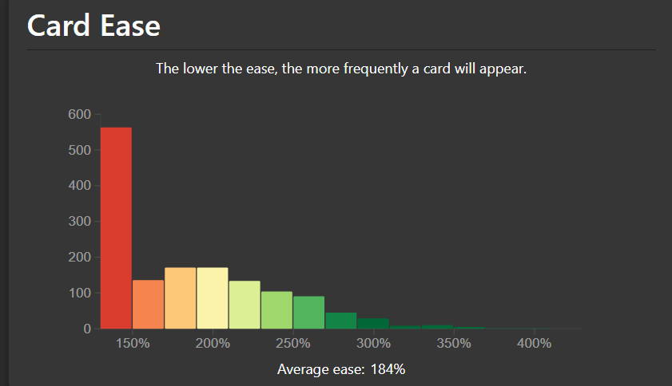

Introduction
Anki SRS Kai (ÊöóË®òÔº≥Ôº≤Ôº≥Êîπ) is a custom scheduler written in ü¶Ä Rust üöÄ and compiled to üì¶ WebAssembly for Anki. It aims to fix the issues with the default Anki SM-2 algorithm while keeping the same overall behaviour. In particular,
- üìâ Ease Hell.
- ⚡ Short intervals for new cards.
- üîÑ Long intervals for mature cards.
Why?
For most users, FSRS is recommended over the default SM-2 algorithm as it simplifies and reduces the amount of configurable parameters, and can adapt very well to a user's review history. Anki SRS Kai aims to fill a niche for power users who wish to stick with Anki SM-2, but also benefit from the adaptive scheduling algorithm from FSRS.
Some examples for using Anki SRS Kai include:
- Convert optimized FSRS parameters to SM-2 parameters for more efficient scheduling than the default SM-2 algorithm and use Ease Reward to deal with Ease Hell.
- Implement your own scheduling algorithm based on Anki SM-2.
- Replace the Straight Reward addon with Ease Reward which allows users to review on mobile without ever needing to sync on PC.
- Disable fuzz in the Anki SM-2 algorithm.
Issues with Anki SM-2
The issues with the default Anki SuperMemo 2 (SM-2) algorithm are
- Ease Hell
- Short intervals for new cards
- Long intervals for mature cards
Ease Hell
At a high level, when calculating the next interval for a review card, Anki SM-2 performs the calculation:
\[ \text{NewInterval} = \text{OldInterval} \times \text{EaseFactor} \times \text{IntervalModifier} \]
And pressing the buttons
- Again: decreases the ease factor by 20%.
- Hard: decreases the ease factor by 15%.
- Good: does not affect the ease factor.
- Easy: increases the ease factor by 15%.
The only way to increase the ease factor for a card is to press the Easy button.
Ease Hell is when a card's ease factor keeps decreasing by pressing the Again or Hard buttons, and inevitably gets capped at 130%. This means that the card will be reviewed unnecessarily very often since the interval grows very slowly.
Using the Easy button more often can fix this issue, but deciding whether to press the Easy button to increase the ease factor or not introduces extra mental fatigue while reviewing. Additionally, the ease factor of a card is not shown during reviews. Moreover, some users only use the Again and Good buttons (ie, Pass/Fail) to reduce mental fatigue. In this case, the ease factor of a card will never increase.
The Anki add-on Straight Reward addresses this issue by rewarding consecutive successful reviews with an ease factor bonus.
Anki SRS Kai natively implements the Straight Reward algorithm to address this issue and has been renamed to Ease Reward.
You can determine if your deck is stuck in Ease Hell by navigating to the Statistics screen and navigating to the Card Ease graph. The image below is an example of a deck stuck in Ease Hell where a large portion of the cards are stuck at the minimum ease of 130%.

Short intervals for new cards
The default Graduating Interval in Anki is set to 1, which means a card will always be seen the next day after the learning card becomes a review card.
According to SuperMemo,
The first optimum interval for review at retrievability of 90% is 3.96 days.
Additionally, FSRS benchmarked the accuracy of several SRS algorithms on a dataset of roughly 10,000 users. FSRS-6 has a very high accuracy rate and was trained on a dataset of approximately 10,000 Anki users, which resulted in the default parameters:
\[ w = [0.212, 1.2931, 2.3065, 8.2956, \cdots] \]
The optimal first interval for review at retrievability of 90% when pressing Good for a new card for the first rating is 2.3065 days. Visit the FSRS algorithm for more details.
By setting the Graduating Interval to 1, the user is reviewing at a nonoptimal time if the target retention is 90%
Long intervals for mature cards
According to SuperMemo,
Memory stabilization (abbreviated \(SInc\) for stability increase) is the increase in memory stability as a result of the retrieval of a memory (e.g. in review). Stabilization may also be a result of memory optimization in sleep.
The higher the stability, the lesser the stability increase at review.
Additionally, according to FSRS,
The larger the value of S, the smaller the SInc value. This means that the higher the stability of the memory, the harder it becomes to make the memory even more stable.
Anki SM-2 does not make the increase in interval smaller as the current interval gets larger. This means that the card is more likely to be forgotten by the time it is reviewed.
For example, suppose a card has
\[ \begin{align} \text{OldInterval} &= 1000 \\ \text{EaseFactor} &= 2.5 \\ \text{IntervalModifier} &= 1.0 \\ \end{align} \]
then
\[ \begin{align} \text{NewInterval} &= \text{OldInterval} \times \text{EaseFactor} \times \text{IntervalModifier} \\ &= 1000 \times 2.5 \times 1.0 \\ &= 2500 \end{align} \]
The interval for the card increased from 1000 days (or roughly 2.74 years) to 2500 days (or roughly 6.85 years). It is very likely that this increase in interval is too large for most material and will be forgotten by the time it is reviewed.
FSRS
The new Free Spaced Repetition Scheduler (FSRS) algorithm introduced in Anki 23.10 also solves the issues with Anki-SM2 and makes it simpler to configure by exposing the Desired Retention setting instead of modifying SM-2 settings such as Graduating interval, Easy bonus, etc.
Additionally, the default FSRS-6 parameters are also better than SM-2 for 99.5% of users according to the benchmarks, which is benchmarked on approximately 10,000 Anki users.
However, some users are reluctant to make the switch because they would still like full control of the SM-2 scheduling algorithm compared to the FSRS algorithm where the desired retention setting is the main configurable parameter, and directly modifying the FSRS parameters is generally not advisible since it has already been optimized to the user's review history.
Furthermore, according to the FSRS Learning and Relearning Steps docs, (re)learning steps should not be greater than or equal to 1 day because
(Re)learning steps of 1 day or greater are not recommended when using FSRS. The main reason they were popular with the legacy SM-2 algorithm is because repeatedly failing a card after it has graduated from the learning phase could reduce its ease a lot, leading to what some people called "ease hell". This is not a problem that FSRS suffers from. By keeping your learning steps under a day, you will allow FSRS to schedule cards at times it has calculated are optimal for your material and memory. Another reason not to use longer learning steps is because FSRS may end up scheduling the first review for a shorter time than your last learning step, leading to the Hard button showing a longer time than Good.
We also recommend you keep the number of learning steps to a minimum. Evidence shows that repeating a card multiple times in a single day does not significantly contribute to long-term memory, so your time is better spent on other cards or a shorter study session.
As a result, some users still wish to have (re)learning steps greater than or equal to 1 day and hence stick with the default Anki SM-2 algorithm.
Ease Hell
FSRS-6 addresses Ease Hell (ie, Difficulty Hell) by applying mean reversion to the new difficulty value after review. This implies that a card's difficulty would converge to the average difficulty over time.
However, it is possible that even with optimized parameters, it may take thousands of reviews before a card converges back to the average difficulty.
In particular, the next difficulty value after review with mean reversion applied is calculated as
\[ D'' = w_7 \cdot D_0(4) + (1 - w_7) \cdot D' \]
The target value of the mean reversion is \(D_0(4)\), which is the initial difficulty when the first rating is Easy, and is calculated as
\[ \begin{align} D_0(G) &= w_4 - e^{w_5 \cdot (G - 1)} + 1 \\ D_0(4) &= w_4 - e^{w_5 \cdot (4 - 1)} + 1 \\ &= w_4 - e^{w_5 \cdot 3} + 1 \end{align} \]
The next difficulty value after review is calculated as
\[ \begin{align} \Delta D(G) &= -w_6 \cdot (G - 3) \\ D' &= D + \Delta D \cdot \frac{10 - D}{9} \end{align} \]
And the default parameters for FSRS-6 is
w = [0.212, 1.2931, 2.3065, 8.2956, 6.4133, 0.8334, 3.0194, 0.001, 1.8722,
0.1666, 0.796, 1.4835, 0.0614, 0.2629, 1.6483, 0.6014, 1.8729, 0.5425, 0.0912,
0.0658, 0.1542]
Suppose we have an extremely difficult card where \(D = 10\), and we always press the Good button where \(G = 3\). Then for the first review, we have
\[ \begin{align} D'' &= w_7 \cdot D_0(4) + (1 - w_7) \cdot D' \\ &= w_7 \cdot D_0(4) + (1 - w_7) \cdot \left( D + \Delta D \cdot \frac{10 - D}{9} \right) \\ &= w_7 \cdot D_0(4) + (1 - w_7) \cdot \left( D + (-w_6 \cdot (G - 3)) \cdot \frac{10 - D}{9} \right) \\ &= w_7 \cdot D_0(4) + (1 - w_7) \cdot \left( 10 + (-w_6 \cdot (3 - 3)) \cdot \frac{10 - 10}{9} \right) \\ &= w_7 \cdot D_0(4) + (1 - w_7) \cdot (10 + (-w_6 \cdot 0) \cdot 0) \\ &= w_7 \cdot D_0(4) + (1 - w_7) \cdot 10 \\ &= w_7 \cdot (w_4 - e^{w_5 \cdot 3} + 1) + (1 - w_7) \cdot 10 \\ &= w_7 \cdot (6.4133 - e^{0.8334 \cdot 3} + 1) + (1 - w_7) \cdot 10 \\ &= w_7 \cdot −4.771630703 + (1 - w_7) \cdot 10 \\ &= 0.001 \cdot −4.771630703 + (1 - 0.001) \cdot 10 \\ &= 0.001 \cdot −4.771630703 + 0.999 \cdot 10 \\ &= −0.004771631 + 9.99 \\ &= 9.985228369 \\ \end{align} \]
We can calculate this automatically by using some code.
Calculate the number of times to go from a difficulty of 10 to 9 by only pressing the Good button
pip install --quiet fsrs==6.1.1
import fsrs
parameters = [0.212, 1.2931, 2.3065, 8.2956, 6.4133, 0.8334, 3.0194, 0.001,
1.8722, 0.1666, 0.796, 1.4835, 0.0614, 0.2629, 1.6483, 0.6014,
1.8729, 0.5425, 0.0912, 0.0658, 0.1542]
desired_retention = 0.90
scheduler = fsrs.Scheduler(
parameters = parameters,
desired_retention = desired_retention,
maximum_interval = 36500,
)
n = 0
difficulty = 10.0
target_difficulty = 9
print(f"target difficulty: {target_difficulty}")
while difficulty >= target_difficulty:
difficulty = scheduler._next_difficulty(difficulty=difficulty, rating=fsrs.Rating.Good)
n += 1
print(f"{n}: {difficulty}")
target difficulty: 9
1: 9.991
2: 9.982009
3: 9.973026991
4: 9.964053964008999
5: 9.95508991004499
...
117: 9.005798073105412
118: 8.997792275032307
We see that it takes 118 reviews pressing the Good button in a row before it reaches a difficulty of 9.
Furthermore, we can calculate how many reviews it will take to go from a difficulty of 10 to the initial difficulty when the first rating is Easy (the target difficulty that every card will converge to in FSRS-6).
Calculate the number of times to go from a difficulty of 10 to the initial difficulty when the first rating is Easy by only pressing the Good button
pip install --quiet fsrs==6.1.1
import fsrs
parameters = [0.212, 1.2931, 2.3065, 8.2956, 6.4133, 0.8334, 3.0194, 0.001,
1.8722, 0.1666, 0.796, 1.4835, 0.0614, 0.2629, 1.6483, 0.6014,
1.8729, 0.5425, 0.0912, 0.0658, 0.1542]
desired_retention = 0.90
scheduler = fsrs.Scheduler(
parameters = parameters,
desired_retention = desired_retention,
maximum_interval = 36500,
)
n = 0
difficulty = 10.0
target_difficulty = scheduler._initial_difficulty(rating=fsrs.Rating.Easy)
print(f"target difficulty: {target_difficulty}")
while difficulty >= target_difficulty:
difficulty = scheduler._next_difficulty(difficulty=difficulty, rating=fsrs.Rating.Good)
n += 1
print(f"{n}: {difficulty}")
target difficulty: 1.0
1: 9.991
2: 9.982009
3: 9.973026991
4: 9.964053964008999
5: 9.95508991004499
...
6798: 1.0100099398929248
6799: 1.0099999299530318
We see that it takes almost 7000 reviews before it reaches the target difficulty.
In other words, the smaller the value \(w_7\) is, the longer it will take for a card to exit Difficulty Hell.
The effects of having a difficult card can be calculated with the code below.
Calculate the next interval for a card with a difficulty of 10.0
pip install --quiet fsrs==6.1.1
import fsrs
parameters = [0.212, 1.2931, 2.3065, 8.2956, 6.4133, 0.8334, 3.0194, 0.001,
1.8722, 0.1666, 0.796, 1.4835, 0.0614, 0.2629, 1.6483, 0.6014,
1.8729, 0.5425, 0.0912, 0.0658, 0.1542]
desired_retention = 0.90
difficulty = 10.0
stability = 100.0
retrievability = 0.90
scheduler = fsrs.Scheduler(
parameters = parameters,
desired_retention = desired_retention,
maximum_interval = 36500,
)
next_stability = scheduler._next_stability(difficulty=difficulty, stability=stability, retrievability=retrievability, rating=fsrs.Rating.Good)
next_interval = scheduler._next_interval(stability=next_stability)
print(f"Next recall stability: {next_stability}")
print(f"Next interval: {next_interval}")
Next recall stability: 125.01489980658735
Next interval: 125
For a card with a difficulty of 10.0, stability (interval) of 100 days, retrievability of 90%, and desired retention of 90% using the default FSRS-6 parameters, the next interval is 125 days.
Calculate the next interval for a card with a difficulty of 5.0
pip install --quiet fsrs==6.1.1
import fsrs
parameters = [0.212, 1.2931, 2.3065, 8.2956, 6.4133, 0.8334, 3.0194, 0.001,
1.8722, 0.1666, 0.796, 1.4835, 0.0614, 0.2629, 1.6483, 0.6014,
1.8729, 0.5425, 0.0912, 0.0658, 0.1542]
desired_retention = 0.90
difficulty = 5.0
stability = 100.0
retrievability = 0.90
scheduler = fsrs.Scheduler(
parameters = parameters,
desired_retention = desired_retention,
maximum_interval = 36500,
)
next_stability = scheduler._next_stability(difficulty=difficulty, stability=stability, retrievability=retrievability, rating=fsrs.Rating.Good)
next_interval = scheduler._next_interval(stability=next_stability)
print(f"Next recall stability: {next_stability}")
print(f"Next interval: {next_interval}")
Next recall stability: 250.08939883952408
Next interval: 250
In contrast, for a card with a difficulty of 5.0, stability (interval) of 100 days, retrievability of 90%, and desired retention of 90% using the default FSRS-6 parameters, the next interval is 250 days.
In this case, the card with a difficulty of 10.0 has its interval reduced by 2x compared to the card with a difficulty of 5.0. This is an issue because if a card was previously difficult, but became easier via increased repetitions and better memory encoding of the material, then the user will be doing more reviews than necessary, resulting in an increased workload.
Additionally, with the default FSRS-6 parameters, a card with a difficulty of 5.0 only takes pressing the Again button 2 times before it reaches a difficulty of 9.45.
Calculate the number of times to go from a difficulty of 5 to 9
pip install --quiet fsrs==6.1.1
import fsrs
parameters = [0.212, 1.2931, 2.3065, 8.2956, 6.4133, 0.8334, 3.0194, 0.001,
1.8722, 0.1666, 0.796, 1.4835, 0.0614, 0.2629, 1.6483, 0.6014,
1.8729, 0.5425, 0.0912, 0.0658, 0.1542]
desired_retention = 0.90
scheduler = fsrs.Scheduler(
parameters = parameters,
desired_retention = desired_retention,
maximum_interval = 36500,
)
n = 0
difficulty = 5
target_difficulty = 9
print(f"target difficulty: {target_difficulty}")
while difficulty <= target_difficulty:
difficulty = scheduler._next_difficulty(difficulty=difficulty, rating=fsrs.Rating.Again)
n += 1
print(f"{n}: {difficulty}")
target difficulty: 9
1: 8.347534
2: 9.447845662568799
This scenario is not limited to pressing the Again button 2 times in a row. It is possible to enter Difficulty Hell with the Again -> Good -> Again -> Good loop. If \(w_7\) is close to 0, it will take many reviews pressing the Good button before the card exits Difficulty Hell.
Whether the mean reversion in FSRS or the Straight Rewards addon for SM-2 is actually effective is still under research, but given that FSRS-6 is optimized on the review history of 10,000 users and found that \(w_7\) to be near \(0\) seems to indicate that it is not as effective as one may hope. However, with Straight Rewards, it is possible for a card to exit Ease Hell (Difficulty Hell) much quicker with user defined values.
Additionally, for some users, after optimizing their deck with optimal parameters, \( w_7 \) may be 0 or close to 0, making the mean reversion algorithm virtually nonexistent. Also, manually modifying this value for most users is generally not recommended, since the parameters have been specifically chosen for optimal results. Moreover, it goes against the design and simplicity of the FSRS algorithm. Ideally, the only parameter the user should configure is the Desired Retention setting.
Using the Easy button more often can fix this issue, but deciding whether to press the Easy button to decrease the difficulty or not introduces extra mental fatigue while reviewing. Additionally, the difficulty of a card is not shown during reviews. Moreover, some users only use the Again and Good buttons (ie, Pass/Fail) to reduce mental fatigue. In this case, the difficulty of a card will require many reviews pressing the Good button before it exits Difficulty Hell if \(w_7\) is close to 0.
You can determine if your deck is stuck in Difficulty Hell by navigating to the Statistics screen, scrolling down to the Card Difficulty graph, and seeing if your \(w_7\) parameter is close to 0. The image below is an example of a deck stuck in Difficulty Hell where most of the cards are stuck at 100% difficulty, and the user's \(w_7\) parameter is \(0.0010\) which means a card will take a long time to exit difficulty hell.
Short intervals for new cards
FSRS-6 addresses the short intervals for new cards issue by optimizing on a user's collection and determining the best initial stability (interval when retrievability is 90%) for each rating (Again, Hard, Good, and Easy). That is, the initial stability after the first rating is calculated as
\[ S_0(G) = w_{G - 1} \]
where \(G = 1\) is pressing the Again button, \(G = 2\) is pressing the Hard button, \(G = 3\) is pressing the Good button, and \(G = 4\) is pressing the Easy button.
With the default parameters,
w = [0.212, 1.2931, 2.3065, 8.2956, 6.4133, 0.8334, 3.0194, 0.001, 1.8722,
0.1666, 0.796, 1.4835, 0.0614, 0.2629, 1.6483, 0.6014, 1.8729, 0.5425, 0.0912,
0.0658, 0.1542]
we have
\[ \begin{align} S_0(1) &= 0.212 \\ S_0(2) &= 1.2931 \\ S_0(3) &= 2.3065 \\ S_0(4) &= 8.2956 \\ \end{align} \]
This implies that the first rating that is chosen for the first learning step will determine the card's interval when it graduates to a review card.
For example, for a deck with learning steps 1m 10m and the first rating is
Good on the first learning step of 1m, then when the card has graduated, it
will have an interval of 2 days (rounded down from 2.3065).
There is no direct equivalent in Anki SM-2 for this behaviour, but the closest is the Graduating interval and Easy interval.
Long intervals for mature cards
FSRS-6 addresses the long intervals for mature cards issue with the following formula
\[ S^\prime_r(D,S,R,G) = S \cdot (e^{w_8} \cdot (11-D) \cdot S^{-w_9} \cdot (e^{w_{10}\cdot(1-R)}-1) \cdot w_{15}(\textrm{if G = 2}) \cdot w_{16}(\textrm{if G = 4}) + 1) \]
According to the FSRS algorithm wiki,
Let \(SInc\) (the increase in stability) denotes \(\frac{S^{'}_{r}(D, S, R, G)}{S}\) which is equivalent to Anki's ease factor.
- The larger the value of D , the smaller the \(SInc\) value. This means that the increase in memory stability for difficult material is smaller than for easy material.
- The larger the value of S , the smaller the \(SInc\) value. This means that the higher the stability of the memory, the harder it becomes to make the memory even more stable.
- The smaller the value of R, the larger the \(SInc\) value. This means that the spacing effect accumulates over time.
- The value of \(SInc\) is always greater than or equal to 1 if the review was successful.
Furthermore, the formula above is a more sophisticated algorithm than SM-2 for handling cards that are past its due date or reviewed early. In particular, the retrievability of a card is calculated as
\[ R(t, S) = \left( 1 + factor \cdot \frac{t}{S} \right)^{-w_{20}} \]
where \(t\) is the number of days since the last review, \(S\) is the stability (interval when probability of recall is 90%), and \(factor = 0.9^{-\frac{1}{w_{20}}} - 1\).
In other words, FSRS can accurately predict the retrievability of a card when it is reviewed, whether it is early or late. In contrast, Anki SM-2 does not predict the retrievability of a card. When a card is reviewed past its due date, the formula becomes
\[ \text{NewInterval} = \left(\text{OldInterval} + \frac{DaysLate}{2}\right) \times \text{EaseFactor} \times \text{IntervalModifier} \]
The formula for reviewing a card early in Anki SM-2 is also similar and is omitted.
Post-lapse stability
When a card is forgotten and relearned, FSRS will retain a portion of the current interval. The formula is calculated by
\[ S'_{f}(D,S,R) = w_{11} \cdot D^{-w_{12}} \cdot ((S+1)^{w_{13}} - 1) \cdot e^{w_{14} \cdot (1 - R)} \]
For example, if a card has an interval of \(S = 1000\) days with \( D = 5 \) and \( R = 0.9 \) and default FSRS-6 parameters \(w = [ \cdots, 1.4835, 0.0614, 0.2629, 1.6483, \cdots ]\), then
\[ \begin{align} S'_{f}(5,1000,0.9) &= 1.4835 \cdot 5^{-0.0614} \cdot ((1000+1)^{0.2629} - 1) \cdot e^{1.6483 \cdot (1 - 0.9)} \\ &\approx 8.16 \end{align} \]
Forgetting and relearning a card will preserve part of the card's interval. While preserving a card's interval might make sense since the material has not been completely forgotten, SuperMemo has found that it is harmful, since it slows down the identification of leeches. They state
Post-lapse stability (PLS) is the stability after a review with a failing grade. Unlike stability computed after a successful repetition, post-lapse stability cannot be derived from the SInc matrix.
In the ideal case, for simple memories, forgetting results in a reset of estimated stability back to near-zero. In theory, only difficult items made of composite memories may show a substantial decrease in the costs of re-learning, however, even that does not show in data.
It has been shown long ago that the length of the first post-lapse optimum interval is best correlated with the number of memory lapses recorded for the item. Even then, post-lapse interval usually oscillates in the range of 1-4 days for the default forgetting index of 10%. The correlation between lapses and the PLS is not very useful in adding to the efficiency of learning. Some competitive spaced repetition software, as well as SuperMemo in its first years, experimented with re-learning hypotheses based on ancient wisdoms of psychology, e.g. by halving intervals after a memory lapse. Current data shows clearly that this approach is harmful, as it slows down the identification of leeches. Such an approach to handling forgotten items is a form of irrational procrastination.
In Anki, the New Interval setting is similar and can be used to preserve part of the card's interval, but they also recommend to leave it at 0.00 for the same reasons above.
For some users, preserving the card's interval may not be desirable but is likely to not know that this behaviour exists without looking into understanding how the algorithm works. While one can set \( w_{11} = 0 \) to turn this behaviour off, this is generally not recommended for the same reasons above in the Ease Hell section
The SuperMemo and FSRS benchmark data currently conflict as to which is the best approach here, and more research is most likely required before a conclusion can be drawn.
Potential issues with optimizing
While the optimizer can optimize your parameters in order to reach the desired retention and make the scheduling more efficient and reduce a user's workload, it can be a double edged sword. Instead of fixing the root cause of the issue, it may encourage users to continue their bad habits and increase their workload, losing any efficiency that would have been gained by switching from Anki SM-2 to FSRS.
Poor encoding and card formulation
If the encoding of the information to be learned and reviewed is poor, then it will be difficult to recall the information. SuperMemo's 20 rules of formulating knowledge goes into detail on how to address this and is highly recommended to be read in order to use Anki effectively. Some important points are
- Do not learn if you do not understand
- Learn before you memorize
- Stick to the minimum information principle
- Use imagery
- Use mnemonic techniques
- Graphic deletion is as good as cloze deletion
- Combat interference
- Optimize wording
- Personalize and provide examples
- Rely on emotional states
- Redundancy does not contradict minimum information principle
Some points have been omitted for brevity but are as equally important.
As a result of poor encoding and card formulation, a card will be extremely difficult to recall which will consequently lower the retention rate of a user's deck. If the retention rate is low (for example, below 80%) and the user has a desired retention of 90%, then the optimized parameters and algorithm will suggest shorter intervals in order to reach a retention of 90%, without the user fixing the actual issue that caused the low retention rate in the first place. In this case, the user's workload has increased due to the suggested shorter intervals after optimizing their parameters.
Accidentally making review cards more difficult
During review, a user may test themselves and unintentionally make the card harder than it should.
For example, when reviewing a monolingual Japanese vocabulary card where the front contains the word to be recalled in kanji, and its reading and Japanese definition on the back, the user may test themselves by checking if they can regurgitate the Japanese definition word for word. This is an extremely difficult task and makes the card harder to review than it should.
In this scenario, to make it easier to review, the user can test themselves by recalling an image if the word is a concrete noun. The benefit of this is that less time is spent on the card during review and makes it easier to recall. For words that are not concrete nouns, recalling the gist of the definition and being lenient with the grading process makes the card less difficult to review. Furthermore, converting the vocabulary card into a sentence card can also help make the card less difficult to review.
This is mainly an extension of the minimum information principle but deserves special mention. For the same reasons above, if the root cause of the issue is not fixed, the algorithm will simply optimize and suggest shorter intervals and increase the workload in order to reach the desired retention, encouraging the user to continue making the card difficult to review.
Using the hard button incorrectly
According to the Anki FSRS docs,
FSRS can adapt to almost any habit, except for one: pressing "Hard" instead of "Again" when you forget the information. When you press "Hard", FSRS assumes you have recalled the information correctly (though with hesitation and a lot of mental effort). If you press "Hard" when you have failed to recall the information, all intervals will be unreasonably high. So, if you have this habit, please change it and use "Again" when you forget the information.
In other words, only the Again button is treated as a fail, and the Hard, Good, and Easy buttons are treated as a Pass. This means that if the user never presses Again, their retention rate will be very high (near 99%) and the optimizer will suggest parameters that gives extremely high intervals upon review in order to reach the user's configured desired retention.
In this case, the suggested intervals are extremely high which make recalling the information difficult. This leads to failing the card often and inevitably increase the workload.
Installation
IMPORTANT: Modifying the custom scheduler affects the whole collection, regardless of the deck options preset. This means the custom scheduler will affect all of your decks.
To install Anki SRS Kai:
- Download the anki_srs_kai.js custom scheduler.
- Open up the Options page for any deck.
- Scroll down to the Advanced section, under Custom scheduling, paste the custom scheduler code in the textbox.
- Follow the Configuration section.
- Click on the Save button.
Uninstall
To uninstall Anki SRS Kai:
- Open up the Options page for any deck.
- Scroll down to the Advanced section, under Custom scheduling, delete the custom scheduler code.
- Click on the Save button.
You can now use Anki's native scheduler (SM-2 or FSRS).
Configuration
The default deck options are
const deckOptions = {
"deck1": {
easeReward: {
minimumConsecutiveSuccessfulReviewsRequiredForReward: 3,
baseEaseReward: 0.05,
stepEaseReward: 0.05,
minimumEase: 1.30,
maximumEase: 2.50,
},
scheduler: {
enableFuzz: true,
maximumInterval: 36500,
intervalModifier: 1.00,
calculateHardMultiplier: (currentEaseFactor, currentInterval) => {
return 0.0;
},
calculateGoodMultiplier: (currentEaseFactor, currentInterval) => {
return currentEaseFactor / Math.pow(currentInterval, 0.054297);
},
calculateEasyMultiplier: (currentEaseFactor, currentInterval) => {
return 0.0;
},
},
},
"Global Settings": {
easeReward: {
minimumConsecutiveSuccessfulReviewsRequiredForReward: 3,
baseEaseReward: 0.05,
stepEaseReward: 0.05,
minimumEase: 1.30,
maximumEase: 2.50,
},
scheduler: {
enableFuzz: true,
maximumInterval: 36500,
intervalModifier: 1.00,
// Approximation of the default FSRS-6 parameters
// [0.212, 1.2931, 2.3065, 8.2956, 6.4133, 0.8334, 3.0194, 0.001, 1.8722, 0.1666, 0.796, 1.4835, 0.0614, 0.2629, 1.6483, 0.6014, 1.8729, 0.5425, 0.0912, 0.0658, 0.1542]
calculateHardMultiplier: (currentEaseFactor, currentInterval) => {
return currentEaseFactor * Math.pow(currentInterval, -0.077098162) + (0.144440985);
},
calculateGoodMultiplier: (currentEaseFactor, currentInterval) => {
return currentEaseFactor * Math.pow(currentInterval, -0.182458510) + (1.779479164);
},
calculateEasyMultiplier: (currentEaseFactor, currentInterval) => {
return currentEaseFactor * Math.pow(currentInterval, -0.183552566) + (3.407921198);
},
},
},
};
Each deck can be configured individually by adding a new top level entry in
deckOptions with the name of the deck you want to configure.
The easeReward and scheduler fields, along with their corresponding
settings, must be correctly configured. Any typos or omitted fields will cause
the custom scheduler to fallback to Anki's native scheduler, either SM-2 or
FSRS, whichever has been enabled for the deck options preset.
The Global Settings entry serves as a fallback configuration for any decks
that do not match the name of a specified deck. If Global Settings is removed
from deckOptions, Anki will revert to using its native scheduler, either SM-2
or FSRS, based on the enabled preset.
Any subdecks under a parent deck will not inherit its options from the parent
deck. A separate top level entry must be created in order for the custom
scheduler to take effect. Otherwise, it will be scheduled using the settings
configured in Global Settings if present. For example, if there is a parent
deck called parentDeck and a subdeck called subDeck, then the top level
entry should be named parentDeck::subDeck.
Ease Reward
Ease reward works exactly the same as the Straight Reward addon with the added benefit of being directly incorporated in the custom scheduler. This means that ease rewards are applied immediately upon review without having to sync on PC when reviewing on mobile. Only review cards are affected. Reviewing cards early (cramming), new cards, learning cards, and relearning cards are not affected.
The ease factor of a card is increased when the Good or Easy button has been pressed consecutively. Pressing the Good or Easy button is considered as a successful review. Pressing the Hard button is not considered as a successful review, but pressing it will not reset the current streak back to 0. Pressing the Again button will reset the current streak back to 0.
Algorithm
Let \(b\) represent the base ease reward, \(s\) represent the step ease reward, \(x\) represent the current number of consecutive successful reviews (ie, the current streak), and \(m\) represent the minimum consecutive successful reviews required for reward.
Then if \(x >= m\), the ease factor of the card will increase by the following formula
\[ b + s \cdot (x - m) \]
Example
- The card has been rated Good for the 6th time in a row.
- The card currently has an ease factor of 250%.
- The minimum consecutive successful reviews required for reward is set to 4.
- The base ease reward is set to 15%.
- The step ease reward is set to 5%.
- The minimum ease is set to 130%.
- The maximum ease is set to 270%.
Since the current streak is 6 and the minimum streak required is 4, we have \(x >= m\), so the card's ease factor will increase by
\[ \begin{align} &b + s \cdot (x - m) \\ &= 15\% + 5\% \cdot (6 - 4) \\ &= 15\% + 10\% \\ &= 25\% \end{align} \]
which is \(250\% + 25\% = 275\%\). However, since the maximum ease is \(270\%\), then the ease of card will be set to \(270\%\).
Default configuration
easeReward: {
minimumConsecutiveSuccessfulReviewsRequiredForReward: 3,
baseEaseReward: 0.05,
stepEaseReward: 0.05,
minimumEase: 1.30,
maximumEase: 2.50,
},
Minimum consecutive successful reviews required for reward
The number of successful reviews required in a streak before the ease reward is applied. Set this to 0 to disable ease reward.
Base ease reward
Specifies the initial ease reward as a percentage. For example, a value of
0.05 represents an increase in the ease factor by 5%.
Step ease reward
Specifies the additional ease reward as a percentage for each consecutive
successful review in the streak. For example, a value of 0.05 represents a 5%
increase in ease per streak step.
Minimum ease
Ease rewards are only applied to cards with an ease factor greater than or equal
to the minimum ease. For example, a value of 1.30 represents an ease factor of
130%. Any card with an ease factor less than 130% will be ignored.
Maximum ease
Ease rewards are only applied to cards with an ease factor less than or equal
to the maximum ease. For example, a value of 2.50 represents an ease factor of
250%. Any card with an ease factor greater than 250% will be ignored.
Migrating from the Straight Reward add-on
To migrate from the Straight Reward add-on, install the AnkiSRSKai: Straight Reward to Ease Reward add-on.
- In Anki, click on the Tools button in the toolbar.
- Click on the Add-ons button.
- Click on the Get Add-ons... button.
- Input
501472260in the Code: textbox. - Click on the OK button.
- Close the Add-ons window.
- Click on the Tools button in the toolbar.
- Click on the AnkiSrsKai: Update cards with consecutive successful review counts button.
Every card in your collection should now be updated with the correct streak counts. This can be verified by opening the Card Browser by clicking on Browse, right clicking on a card, clicking Info..., and confirming that the Custom Data with the c key has the correct value based on the card's review history.
The Straight Reward to Anki SRS Kai add-on can now be uninstalled since the custom scheduler can keep track of your streak without the use of an add-on.
Scheduler
The scheduler is the same exact implementation as the Anki SM-2 algorithm. However, only review cards are affected. Reviewing cards early (cramming), new cards, learning cards, and relearning cards are not affected and will default to the native Anki scheduler, either SM-2 or FSRS.
The main difference is that scheduler extends the notion of the ease factor in Anki SM-2 by converting it from a scalar value to a mathematical function based on two parameters, the current ease factor and the current interval of the card. This addresses the long intervals for mature cards issue with Anki SM-2.
The next interval for a card upon review is calculated with the following formula
\[ \text{NewInterval} = \text{OldInterval} \times \text{EaseFactor} \times \text{IntervalModifier} \]
Default configuration
scheduler: {
enableFuzz: true,
maximumInterval: 36500,
intervalModifier: 1.00,
// Approximation of the default FSRS-6 parameters
// [0.212, 1.2931, 2.3065, 8.2956, 6.4133, 0.8334, 3.0194, 0.001, 1.8722, 0.1666, 0.796, 1.4835, 0.0614, 0.2629, 1.6483, 0.6014, 1.8729, 0.5425, 0.0912, 0.0658, 0.1542]
calculateHardMultiplier: (currentEaseFactor, currentInterval) => {
return currentEaseFactor * Math.pow(currentInterval, -0.077098162) + (0.144440985);
},
calculateGoodMultiplier: (currentEaseFactor, currentInterval) => {
return currentEaseFactor * Math.pow(currentInterval, -0.182458510) + (1.779479164);
},
calculateEasyMultiplier: (currentEaseFactor, currentInterval) => {
return currentEaseFactor * Math.pow(currentInterval, -0.183552566) + (3.407921198);
},
},
Enable fuzz
According to the Anki docs,
When you select an answer button on a review card, Anki also applies a small amount of random “fuzz” to prevent cards that were introduced at the same time and given the same ratings from sticking together and always coming up for review on the same day.
Learning cards are also given up to 5 minutes of extra delay so that they don’t always appear in the same order, but answer buttons won't reflect that. It is not possible to turn this feature off.
Set this to true to enable fuzzing. Otherwise, set to false to disable
fuzzing.
The custom scheduler allows the user to disable fuzzing, whereas Anki SM-2 does
not. It is recommended to set this value to true to prevent cards from
sticking together and coming up for review on the same day.
Maximum interval
According to the Anki docs,
The maximum number of days a review card will wait before it's shown again. When reviews have reached the limit, Hard, Good and Easy will all give the same delay. The shorter you set this, the greater your workload will be. The default is 100 years; you can decrease this to a smaller number if you’re willing to trade extra study time for higher retention.
IMPORTANT: Since the scheduler only affects review cards, the maximum interval setting in the deck options preset in the Anki UI has no effect for review cards. Please copy the maximum interval setting for the deck here.
Interval modifier
According to the Anki docs,
An extra multiplier that is applied to all reviews. At its default of 1.00 it does nothing. If you set it to 0.80, intervals will be generated at 80% of their normal size (so a 10 day interval would become 8 days). You can You can thus use the multiplier to to make your reviews less or more frequent.
IMPORTANT: Since the scheduler only affects review cards, the interval modifier setting in the deck options preset in the Anki UI has no effect for review cards. Please copy the interval modifier for the deck here.
Calculate hard multiplier
A function that takes in two parameters, currentEaseFactor and
currentInterval, and outputs the resulting ease factor for the Hard button.
Set to return 0.0; to fallback to Anki's native scheduler, either SM-2 or
FSRS. This effectively disables the custom scheduler when pressing the Hard
button.
Calculate good multiplier
A function that takes in two parameters, currentEaseFactor and
currentInterval, and outputs the resulting ease factor for the Good button.
Set to return 0.0; to fallback to Anki's native scheduler, either SM-2 or
FSRS. This effectively disables the custom scheduler when pressing the Good
button.
Calculate easy multiplier
A function that takes in two parameters, currentEaseFactor and
currentInterval, and outputs the resulting ease factor for the Easy button.
Set to return 0.0; to fallback to Anki's native scheduler, either SM-2 or
FSRS. This effectively disables the custom scheduler when pressing the Easy
button.
Converting FSRS to SM-2 parameters
Enhancing the Anki SM-2 algorithm by converting the ease factor from a scalar value to a mathematical function that takes two parameters, the current ease factor and current interval of the card, allows us to approximate FSRS's stability increase function with a simple power function.
According to the FSRS algorithm, the new stability after successful review is calculated as \[ S^\prime_r(D,S,R,G) = S \cdot (e^{w_8} \cdot (11-D) \cdot S^{-w_9} \cdot (e^{w_{10}\cdot(1-R)}-1) \cdot w_{15}(\textrm{if G = 2}) \cdot w_{16}(\textrm{if G = 4}) + 1) \]
and since
Let \(SInc\) (the increase in stability) denotes \(\frac{S^{'}_{r}(D, S, R, G)}{S}\) which is equivalent to Anki's ease factor.
we can approximate \(SInc\) with the function \(k \cdot x^a + b\) where \(k\) is the current ease factor which has the initial value provided by Starting Ease, \(x\) is the current interval, and \(a\) and \(b\) is some constant that provides the curve of best fit to the \(SInc\) function.
That is,
\[ \text{EaseFactor} = k \cdot x^a + b \]
in the Anki SM-2 next interval function
\[ \text{NewInterval} = \text{OldInterval} \times \text{EaseFactor} \times \text{IntervalModifier} \]
Retrieving optimized FSRS parameters
IMPORTANT: If you do not have many reviews for the optimizer to train on, or you have previously used Anki incorrectly, such as pressing the Hard button instead of the Again button to fail a card, it is recommended to use the default FSRS-6 parameters until your review history is large enough for optimization.
First, retrieve your optimized FSRS parameters. This can be done either by
- Directly in Anki
- FSRS Optimizer Jupyter Notebook
Anki
FSRS can safely be temporarily enabled in the deck options preset by
- Click on the Gear icon next to your deck.
- Click on the Options button.
- Navigate down to the FSRS section and click on the toggle button to enable FSRS.
- Leave Desired retention to the default value. Changing this has no effect on the final parameters.
- Copy and save the FSRS parameters somewhere for later.
- (Optional) Click on the Compute minimum recommended retention label and click the Compute button. Copy and save the Minimum recommended retention value somewhere for later.
- Close the deck options preset window and click on Discard to discard changes.
FSRS Optimizer Jupyter Notebook
Alternatively, if you don't want to temporarily enable FSRS, the FSRS Optimizer Jupyter Notebook can be used instead which provides extra statistics and graphs about your review history.
- Go to the FSRS4Anki Optimizer.
- Click on the Open in Colab button.
- Follow the instructions provided in the notebook.
- Scroll down to the Result section
- Copy and save the optimized FSRS parameters somewhere for later.
- (Optional) Scroll down to the Optimize retention to minimize the time of reviwes section, copy and save the suggested retention value somewhere for later.
Convert FSRS to SM-2
To convert your optimized FSRS parameters to SM-2
- Go to the FSRS to SM-2 notebook.
- Click on the Open in Colab button.
- Replace
parameterswith your optimized FSRS parameter values. - Replace
starting_easewith the same Starting Ease value in your deck options preset. - Replace
desired_retentionwith your desired retention. Optionally, you can use the Minimum recommended retention value from above. - Click on the Runtime button in the toolbar at the top.
- Click on the Run all button.
- Scroll down to for the suggested values.
For example, with the FSRS-5 default parameters and default Anki SM-2 settings,
parameters = [0.212, 1.2931, 2.3065, 8.2956, 6.4133, 0.8334, 3.0194, 0.001,
1.8722, 0.1666, 0.796, 1.4835, 0.0614, 0.2629, 1.6483, 0.6014,
1.8729, 0.5425, 0.0912, 0.0658, 0.1542]
starting_ease = 2.5
desired_retention = 0.90
The output is
Replace your settings in the Deck Options for your deck with the values below.
Note:
1. Use `Graduating interval (good)` if you often press Good when first learning
a new card
2. Otherwise, use `Graduating interval (hard)` if you often press Hard when
first learning a new card
3. Otherwise, use `Graduating interval (again)` if you often press Again when
first learning a new card
4. If you're not sure, use `Graduating interval (good)`
This is because FSRS considers the first rating for New cards when training its
parameters. Since Anki SM-2 does not consider the first rating for New cards, it
is best to set the Graduating interval to the one you most often use
Graduating interval (again): 0
Graduating interval (hard): 1
Graduating interval (good): 2
Easy interval: 8
Replace the scheduler settings for your deck in the Custom scheduling field in
the Deck Options with the following values:
scheduler: {
// ... (other settings)
intervalModifier: 1.0,
calculateHardMultiplier: (currentEaseFactor, currentInterval) => {
return currentEaseFactor * Math.pow(currentInterval, -0.077098162) + (0.144440985);
},
calculateGoodMultiplier: (currentEaseFactor, currentInterval) => {
return currentEaseFactor * Math.pow(currentInterval, -0.182458510) + (1.779479164);
},
calculateEasyMultiplier: (currentEaseFactor, currentInterval) => {
return currentEaseFactor * Math.pow(currentInterval, -0.183552566) + (3.407921198);
},
},
Follow the instructions in the Jupyter notebook output as shown above.
- Click on the Gear icon next to your deck.
- Click on the Options button.
- Set the Graduating interval to one of the suggested values depending on your review habits. If you are not sure, use the Graduating interval (good) value.
- (Optional) Set the Minimum interval to one of the suggested graduating interval values depending on your review habits. If you are not sure, use the Graduating interval (good) value.
- Set the Easy interval to the suggested value.
- Scroll down to Advanced section, click on Custom scheduling, and
replace the
schedulersection in the associated deck indeckOptions - Click on Save.
Fine tuning the parameters
Assuming the Good button is pressed for each review, we can
graph the functions \(SInc\)
and calculateGoodMultiplier (similar graphs can be created for the Hard and
Easy buttons).
As shown in the graph above, as the interval of a card increases, the smaller the ease factor (ie, the increase in interval) which solves the long intervals for mature cards issue with SM-2. If the ease factor function grows too fast or too slow, you can modify the parameters accordingly.
Reschedule all cards immediately
FSRS has the option to reschedule cards on change which will reschedule all cards with new intervals immediately instead of being rescheduled as it comes up during reviews. While this can be temporarily used as part of the conversion from FSRS to SM-2, it is not recommended since it often results in a large number of cards becoming due. Instead, it is recommended to allow cards reschedule with the custom scheduler as it comes up during reviews. This means that it will take a few weeks or months before any visible results can be observed with the new scheduler.
Examples
Replace Straight Reward add-on and use the native Anki scheduler
const deckOptions = {
"My Deck": {
easeReward: {
minimumConsecutiveSuccessfulReviewsRequiredForReward: 3,
baseEaseReward: 0.05,
stepEaseReward: 0.05,
minimumEase: 1.30,
maximumEase: 2.50,
},
scheduler: {
// These options are effectively ignored since the hard, good, and
// easy buttons are using the native Anki scheduler
enableFuzz: true,
maximumInterval: 36500,
intervalModifier: 1.00,
calculateHardMultiplier: (currentEaseFactor, currentInterval) => {
// Use the native Anki scheduler for the Hard button
return 0.0;
},
calculateGoodMultiplier: (currentEaseFactor, currentInterval) => {
// Use the native Anki scheduler for the Good button
return 0.0;
},
calculateEasyMultiplier: (currentEaseFactor, currentInterval) => {
// Use the native Anki scheduler for the Easy button
return 0.0;
},
},
},
};
Disable fuzz for Anki SM-2
const deckOptions = {
"My Deck": {
easeReward: {
// Disable ease reward
minimumConsecutiveSuccessfulReviewsRequiredForReward: 0,
baseEaseReward: 0.05,
stepEaseReward: 0.05,
minimumEase: 1.30,
maximumEase: 2.50,
},
scheduler: {
// Disable fuzz
enableFuzz: false,
maximumInterval: 36500,
intervalModifier: 1.00,
calculateHardMultiplier: (currentEaseFactor, currentInterval) => {
return currentEaseFactor;
},
calculateGoodMultiplier: (currentEaseFactor, currentInterval) => {
// Schedule using the SM-2 algorithm with fuzz disabled
//
// We cannot return 0.0 since the custom scheduler needs to run
// in order to disable fuzz
return currentEaseFactor;
},
calculateEasyMultiplier: (currentEaseFactor, currentInterval) => {
return currentEaseFactor;
},
},
},
};
FAQ
What platforms and versions of Anki are supported?
Anki SRS Kai is supported on the following platforms
- Anki Desktop (Windows, Mac, Linux): 25.07+
- AnkiDroid (Android): 2.22.3+
- AnkiMobile (iOS): 25.07+
IMPORTANT: AnkiWeb is not supported. There is no technical limitation as WebAssembly is supported by every major browser. However, support for the custom scheduler must be enabled by Anki Web itself for the custom scheduler to work.
Because this is implemented in JavaScript, it is not limited to the computer version. AnkiMobile and AnkiDroid both support it as well, and AnkiWeb may also support it in the future. This will allow advanced users to make adjustments to the standard scheduling behaviour, that apply on all platforms.
Can I enable FSRS and Anki SRS Kai at the same time?
While the custom scheduler (Anki SRS Kai) will continue to work even if FSRS is enabled, it is highly recommended to turn FSRS off to avoid any potential unexpected behaviours not covered in our integration test suite.
What is the large binary blob called wasmBytes in the customer scheduler and is it safe?
The large binary blob called wasmBytes in the custom scheduler is the code
that runs the Anki SRS Kai scheduler. It is compiled from Rust to
WebAssembly and is
safe by design. Each WebAssembly
module is ran in a memory-safe, sandboxed environment, separated from the host
runtime. The source code is publicly
available.
Recommendations
Below is general advice to potentially help increase retention rate and reduce overall workload, but is by no means hard, set in stone rules, and may not be applicable to all contexts.
Auto suspend leeches
It is highly recommended to auto suspend leeches.
While Ease Reward or FSRS' mean reversion algorithm can help address Ease Hell, it only solves half of the problem. Suppose you have a difficult card that you keep failing. In this case, Ease Reward or the FSRS mean reversion algorithm will never be applied, and hence, the card will be stuck in Ease Hell.
Assuming the starting ease for a card is 250%. If we set the leech threshold to 4, then pressing the Again button 4 times at any point in its review history will automatically suspend the card. This means the lowest ease a card can have is \(250\% - (4 - 1) \cdot 20\% = 190\%\). Likewise, if the leech threshold is 8, then the lowest ease a card can have is \(250\% - (8 - 1) \cdot 20\% = 110\%\), but since the minimum ease factor in Anki is 130%, it is capped at 130%.
Once a card has leeched, it is highly recommended to deal with the leech. As mentioned in the Anki docs, there are 3 ways to deal with a leech.
The best option is to edit the card to make it less difficult. This includes sticking to the minimum information principle and refactoring the card, or adding hints to the front of the card such as example sentences or hints on how to read a word (such as 訓読み, 音読み, 当て字, 湯桶読み, or 重箱読み for Japanese). Also, it is beneficial to spend more time to understand the material better, looking up a word's etymology, extra example sentences, paying close attention to how the character is written (such as how the kanji character is written in Japanese), creating mnemonics, etc.
Once the card has been refactored, it is highly recommended to Reset the card in the Card Browser with the Reset repetition and lapse counts checkbox enabled and treat it as a new card. If the lapse counts are not reset, then Anki will automatically suspend the card again in half the threshold. For example, if the threshold is set to 4, and the card is not reset, then it will be suspended again at the 6th lapse instead of the 8th lapse.
To enable this feature,
- Click on the Gear icon button for your deck.
- Click on the Options button.
- Scroll down to the Lapses section.
- Set Leech threshold to a value between 4 to 8.
- Set Leech action to Suspend Card.
- Click on the Save button.
Set post-lapse interval to 0
While preserving a card's interval might make sense since the material has not been completely forgotten, SuperMemo has found that it is harmful, since it slows down the identification of leeches. They state
Post-lapse stability (PLS) is the stability after a review with a failing grade. Unlike stability computed after a successful repetition, post-lapse stability cannot be derived from the SInc matrix.
In the ideal case, for simple memories, forgetting results in a reset of estimated stability back to near-zero. In theory, only difficult items made of composite memories may show a substantial decrease in the costs of re-learning, however, even that does not show in data.
It has been shown long ago that the length of the first post-lapse optimum interval is best correlated with the number of memory lapses recorded for the item. Even then, post-lapse interval usually oscillates in the range of 1-4 days for the default forgetting index of 10%. The correlation between lapses and the PLS is not very useful in adding to the efficiency of learning. Some competitive spaced repetition software, as well as SuperMemo in its first years, experimented with re-learning hypotheses based on ancient wisdoms of psychology, e.g. by halving intervals after a memory lapse. Current data shows clearly that this approach is harmful, as it slows down the identification of leeches. Such an approach to handling forgotten items is a form of irrational procrastination.
By aggressively dealing with difficult cards and allowing them to leech, your retention should stay fairly high (around 90%) since a majority of your cards are made less difficult. This also allows the FSRS optimizer to provide better optimized parameters that reduce your overall workload.
Completely resetting a card's interval to 0 after a lapse is not harmful either. If the card is truly easy, then the card can be passed within a very short amount of time and does not contribute much to the actual overall workload. Otherwise, if it is difficult to recall, then it needed the extra repetitions in order for it to consolidate in your long term memory.
To enable this feature,
- Click on the Gear icon button for your deck.
- Click on the Options button.
- Scroll down to the Advanced section.
- Set New Interval to
0.00. - Click on the Save button.
Avoid spending too much time on a single card
As the Anki docs states,
When a card is shown, only the question is shown at first. After thinking about the answer, either click the Show Answer button, or press the spacebar. The answer will then be shown. It’s okay if it takes you a little while to recall the answer, but as a general rule if you can’t answer within about 10 seconds, it’s probably better to move on and show the answer than keep struggling to remember.
It is generally better to spend as little time as possible per card. If you stick to the minimum information principle, the cards should naturally be simple and easy to remember. In this case, if the card still takes awhile to remember, then it indicates that the material is not yet well understood and needs the extra repetitions, so it is best to quickly fail rather than spend a long time trying to recall the information.
For example, in language learning contexts such as Japanese, vocabulary cards can be reviewed within 2 to 3 seconds each. If it takes longer than that, it is a good indication that the word has not yet been well learned and should be reviewed more frequently by failing the card and trying again. A benefit of spending less time per card is that the overall time to review a deck decreases. Also, unintuitively, failing cards quickly has the extra benefit of increasing your retention since it forces you to know the material well.
Only use Again and Good buttons
It may be beneficial to limit yourself and only use the Again (Fail) and Good (Pass) buttons. The main benefit is to reduce the mental fatigue of choosing whether a card was hard, good, or easy and limiting the number of choices from 4 to 2.
There is no conclusive evidence that this is objectively better, but FSRS has done some research and found using only the Again and Good buttons was more accurate. However, they have noted that it is inconclusive and they do not endorse the advice anymore.
Personal Results
After a year of testing on my Japanese deck from December 2023 with ~30,000 cards learned to December 2024 with ~37,000 cards learned, using Anki SRS Kai over Anki SM-2 has increased my monthly mature (cards with an interval greater than or equal to 21) retention rate from 80.7% to 88%, monthly supermature (cards with an interval greater than or equal to 100) retention from 81.8% to 88.6%, and reduced my daily workload by almost 17%, from ~350 cards to review to ~300 cards to review each day.
Optimizing my deck with FSRS 4.5 produced the following parameters
w = [3.0764, 4.0925, 6.2791, 10.5132, 5.0603, 0.8525, 0.7931, 0.0993, 0.8338,
0.1, 0.9419, 2.0364, 0.1718, 0.4441, 1.3824, 0.0001, 3.9998]
which have later been converted to SM-2 parameters in the custom scheduler code below.
Previous Anki Settings
Daily Limits
- New cards/day: 20
- Maximum reviews/day: 9999
- New cards ignore review limit: off
- Limits start from top: off
New Cards
- Learning steps: 1m 10m 1h
- Graduating interval: 1
- Easy interval: 4
- Insertion order: Sequential (oldest cards first)
Lapses
- Relearning steps: 10m 1h
- Minimum interval: 1
- Leech threshold: 4
- Leech action: Suspend Card
Display Order
- New card gather order: Descending position
- New card sort order: Card type, then order gathered
- New/review order: Show before reviews
- Interday learning/review order: Mix with reviews
- Review sort order: Due date, then random
FSRS
- FSRS: off
Burying
- Bury new siblings: off
- Bury review siblings: off
- Bury interday learning siblings: off
Advanced
- Maximum interval: 1825
- Starting ease: 2.50
- Easy bonus: 1.30
- Interval modifier: 1.00
- Hard interval: 1.20
- New interval: 0.00
- Custom scheduling: empty
New Anki Settings
Daily Limits
- New cards/day: 20
- Maximum reviews/day: 9999
- New cards ignore review limit: off
- Limits start from top: off
New Cards
- Learning steps: 1m 10m 1h
- Graduating interval: 4
- Easy interval: 4
- Insertion order: Sequential (oldest cards first)
Lapses
- Relearning steps: 10m 1h
- Minimum interval: 3
- Leech threshold: 4
- Leech action: Suspend Card
Display Order
- New card gather order: Descending position
- New card sort order: Card type, then order gathered
- New/review order: Show before reviews
- Interday learning/review order: Mix with reviews
- Review sort order: Due date, then random
FSRS
- FSRS: off
Burying
- Bury new siblings: off
- Bury review siblings: off
- Bury interday learning siblings: off
Advanced
- Maximum interval: 1825
- Starting ease: 2.50
- Easy bonus: 1.30
- Interval modifier: 1.00
- Hard interval: 1.20
- New interval: 0.00
- Custom scheduling:
const deckOptions = {
"日本語": {
easeReward: {
minimumConsecutiveSuccessfulReviewsRequiredForReward: 3,
baseEaseReward: 0.05,
stepEaseReward: 0.05,
minimumEase: 1.30,
maximumEase: 2.50,
},
scheduler: {
enableFuzz: true,
maximumInterval: 1825,
intervalModifier: 1.00,
calculateHardMultiplier: (currentEaseFactor, currentInterval) => {
return 0.0;
},
calculateGoodMultiplier: (currentEaseFactor, currentInterval) => {
return currentEaseFactor / Math.pow(currentInterval,
0.059729712);
},
calculateEasyMultiplier: (currentEaseFactor, currentInterval) => {
return 0.0;
},
},
},
"Global Settings": {
easeReward: {
minimumConsecutiveSuccessfulReviewsRequiredForReward: 3,
baseEaseReward: 0.05,
stepEaseReward: 0.05,
minimumEase: 1.30,
maximumEase: 2.50,
},
scheduler: {
enableFuzz: true,
maximumInterval: 1825,
intervalModifier: 1.00,
// Approximation of the default FSRS v4 parameters
// [0.27, 0.74, 1.3, 5.52, 5.1, 1.02, 0.78, 0.06, 1.57, 0.14, 0.94, 2.16, 0.06, 0.31, 1.34, 0.21, 2.69]
calculateHardMultiplier: (currentEaseFactor, currentInterval) => {
return 0.0;
},
calculateGoodMultiplier: (currentEaseFactor, currentInterval) => {
return (currentEaseFactor / Math.pow(currentInterval,
0.024210328));
},
calculateEasyMultiplier: (currentEaseFactor, currentInterval) => {
return 0.0;
},
},
},
};
// Anki SRS Kai code below
// ...
Statistics
The image below is my retention rate using Anki SM-2.

The image below is my retention rate using Anki SRS Kai.


Support development
Any contributions to Anki SRS Kai is greatly appreciated, whether it is reporting bugs, improving documentation, or submitting code enhancements.
- Bug reports: Found an issue? Report it on our issue tracker page.
- Documentation: Help us make the documentation more comprehensive and beginner friendly.
- Code contributions: Submit pull requests to improve existing features or add new ones.
- Sponsor development: You can also sponsor this project via GitHub sponsors. Your sponsorship directly supports the development and maintenance of Anki SRS Kai.
Changelog
All notable changes to this project will be documented in this file.
The format is based on Keep a Changelog, and this project adheres to Calendar Versioning.
[Unreleased]
[25.8.0] - 2025-08-16
Changed
- Update scheduler to Anki 25.07.5.
- Update FSRS to SM-2 Jupyter notebook to use FSRS-6.
- Update AnkiDroid integration test suite to use AnkiDroid v2.22.3 with Anki backend 25.07.5.
[24.12.0] - 2024-12-27
Added
- Anki SRS Kai custom scheduler.
- Anki SRS Kai addon to migrate from the Straight Reward add-on to Ease Reward.
- FSRS-5 to SM-2 Jupyter Notebook.